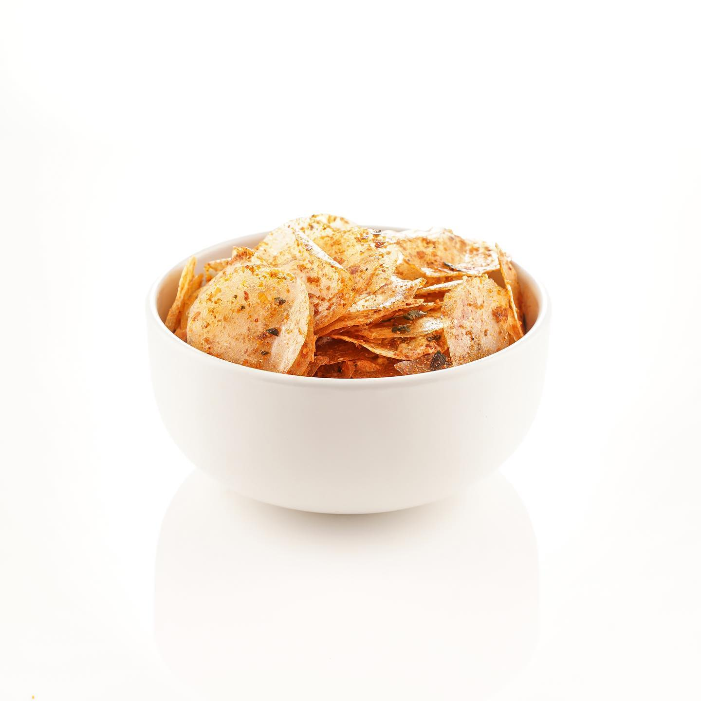

Kripca


Kripca adalah singkatan dari keripik kaca dinamakan demikian karena bentuknya yang sangat tipis. Menjadi camilan favorit, berasal dari olahan singkong dan tepung tapioka yang digoreng dan diberi bumbu pedas daun jeruk. Mempunyai tekstur yang renyah dan garing, bercita rasa gurih, pedas dan enak
Komposisi:
-
- Tepung tapioka
- Minyak goreng
- Air
- Penyedap rasa
- Bubuk cabai
- Daun jeruk
Cara Pembuatan:
1. Masukkan tepung tapioka, penyedap rasa dan air ke dalam panci. Aduk dan campur, kemudian masak dengan api sedang, aduk terus sampai berubah tekstur menjadi kental seperti lem.
2. Matikan kompor. Siapkan plastik yang sudah diolesi dengan minyak goreng.
3. Letakkan adonan di atas plastik, kemudian tutup lagi dengan plastik yang sudah diolesi dengan minyak goreng.
4. Pipihkan adonan dengan rolling pin sampai benar-benar tipis.
5. Jemur sampai kering dibawah sinar matahari.
6. Jika sudah lumayan kering, lepaskan adonan dari plastik dan potong berbentuk bulat.
7. Panaskan sedikit minyak untuk menggoreng dan mencampurkan bumbu.
8. Masukkan adonan yang telah dipotong tadi, jangan terlalu lama dalam menggorengnya.
9. Angkat keripik kaca yang telah digoreng, campurkan dengan bumbu, cabai bubuk sesuai selera.
10. Keripik kaca telah siap untuk disajikan.